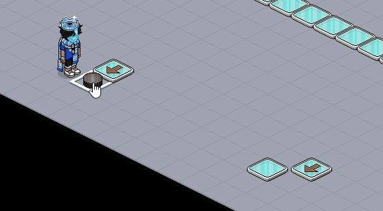
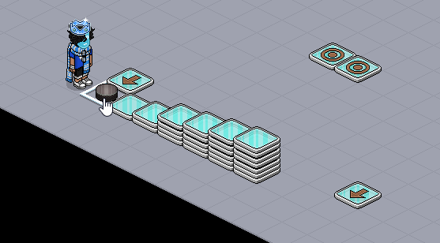
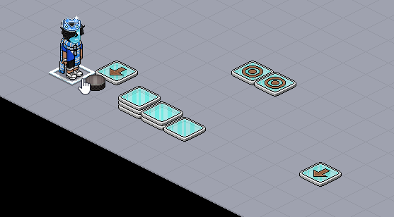
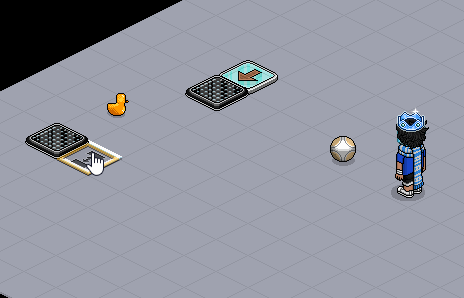

|
|
|
Fragen aus der Community
Wie kann ein Fußball/Puck abgebremst oder gestoppt werden, z. B. damit der Ball lang genug im Tor bleibt, um von den Wireds registriert zu werden?
Frage von: verschiedene User
Frage von: verschiedene User
Ein Fußball oder ein Puck (Eishockeypuck bewegen sich z. B. weiter) reagieren oft ähnlich. Ab und zu stellt man fest, dass diese durch Höhenunterschiede abgebremst oder sogar ein wenig weiter vorangebracht werden können. Höhenunterschiede können z. B. durch stapelbare Böden mit einer gewissen Höhe erzeugt werden. Dabei kommt es darauf an, an welchen Stellen und wie hoch gestapelt wird (an schlecht gewählten Stellen kann es sogar passieren, dass sich nichts ändert). Zudem macht es auch einen Unterschied, wie viele Höhenunterschiede es gibt und ob es auf- oder absteigend ist. Folgende GIFs sollen zeigen, wie genau das gemeint ist:
|
 Mit Höhenunterschied an verschiedenen Stellen
|
|
 Mit aufsteigender Höhe
|
 Mit absteigender Höhe
|
Wenn die verschiedenen Aufbauten miteinander kombiniert werden, gibt es noch mehr Möglichkeiten. Aber letztendlich hängt es von der Position ab, von wo aus der User schießt, weshalb es mehr zu Abbremsungen oder Beschleunigungen kommt als zum Stopp (um mit Höhenunterschiede zu stoppen siehe weiter unten). Eine stärkere Methode, um Pucks und Bälle direkt zu stoppen, unabhängig von der Position von der aus geschossen wird, wird nachfolgend gezeigt:
Pucks und Bälle werden teleportiert, wenn sie auf eine Banzai-Falle geschossen werden. Legt man aber auf/in alle Fallen außer einer Falle ein Möbel, worauf nichts gestapelt werden kann (z. B. Ente) und schießt den Puck auf die freie Falle, dann stoppt dieser ohne zu "teleportieren".
Pucks und Bälle werden teleportiert, wenn sie auf eine Banzai-Falle geschossen werden. Legt man aber auf/in alle Fallen außer einer Falle ein Möbel, worauf nichts gestapelt werden kann (z. B. Ente) und schießt den Puck auf die freie Falle, dann stoppt dieser ohne zu "teleportieren".

Ball stoppt per Banzai-Blockade
Es funktioniert auch, wenn ein Bot oder User auf der anderen Falle steht.
Für Fußball-Games müssen Bälle gestoppt bzw. stark abgebremst werden, da sie für die Wireds oft zu schnell in der Bewegung sind. In solchen Games kann die Banzai-Blockade funktionieren, jedoch muss das Tor dann bis auf ein 1 x 1 Feld abgesperrt werden. Je nach Bauweise würde man nicht Winken, wenn jemand ein Tor schießt bzw. keinen Tor-Punkt erhalten. Eine bessere Möglichkeit ergibt sich, wenn Banzai-Fallen hinter dem Tor liegen. So erhält man auch einen Tor-Punkt und das Tor selbst ist nicht eingeschränkt. Dafür gibt es verschiedene Aufbaumöglichkeiten. Man muss jedoch alles so bauen, dass der Spieler möglichst keinen Schusswinkel findet, der dafür sorgen kann, dass die Wireds den Ball nicht "bemerken". Ein Aufbau, deren Funktion sehr sicher ist und gut getestet wurde, sieht so aus:
Statt Enten können auch andere Möbel verwendet werden, die den Ball blockieren können. Es ist auch möglich, das "Banzai-Fallen-Feld" mit sehr tiefen Böden zu ersetzen, das setzt aber BC voraus. Ansonsten kann man (z. B. per Stapelfeld) das Tor und das Spielfeld höher setzen.
Wichtig wäre noch zu wissen, dass nach einem Tor-Schuss, wenn der Ball zur Mitte zurück soll, die Wireds am besten wiederholt auslösen sollten, da der Ball, während er sich in Bewegung befindet, nicht per Wired woanders hin positioniert/bewegt werden kann (andere Effekte funktionieren dann natürlich). Es wird zwar ausgelöst und von den Wireds erkannt, wenn die Bewegung langsam genug ist, aber bewegte Möbel, besonders Pucks und Bälle, können grundsätzlich schlecht woanders hin positioniert werden.
Wie man sieht, sind nicht immer nur reine Wiredkenntnisse wichtig, um Games einzustellen. Manchmal wird das Wissen über die Mechanik benötigt (Mechanik-Möbel: Roller, Pucks, Rails, Pferdesprung, ToW's...).